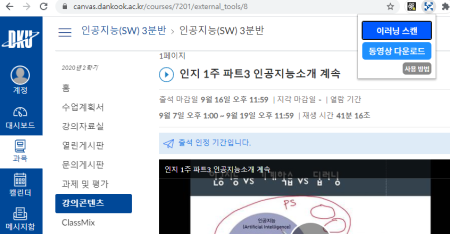
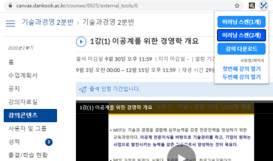
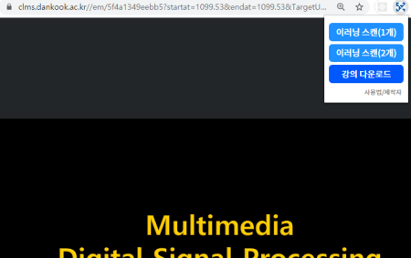

✔️ Step 1. (한 페이지에 영상이 한개인 경우) 이러닝 강의콘텐츠에서 강의 들어간 후 [이러닝
스캔(1개)] 클릭하기

✔️ Step 1-1. 한 페이지에 영상이 두개인 경우
💡 밑의 사진처럼 하루에 영상을 두개로 나눠서 올리는 교수님의 강의의 경우,

💡 [이러닝 스캔(2개)]를 클릭해서 원하는 강의를 클릭하시면 됩니다!

✔️ Step 2. 로딩 동영상 재생 후 강의 동영상으로 넘어가면 [강의 다운로드] 클릭하기
꼭 2초짜리 로딩 동영상을 재생한 후 강의 동영상이 나오면 클릭하세요!

본 프로그램으로 어떠한 수익도 창출하지 않으며, 이러닝 강의 다운로드 기능만 포함되어 있으니
안심하고 쓰셔도 됩니다. 프로그램 전체소스는 공개되어 있고 풀 리퀘스트를 통해 기여할 수
있습니다.